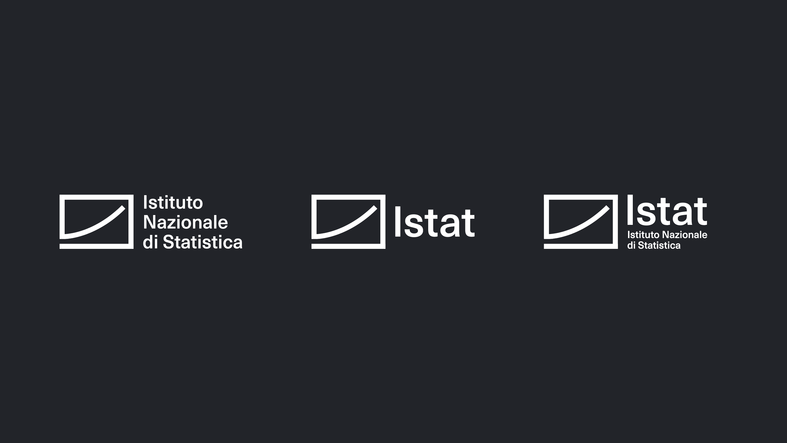
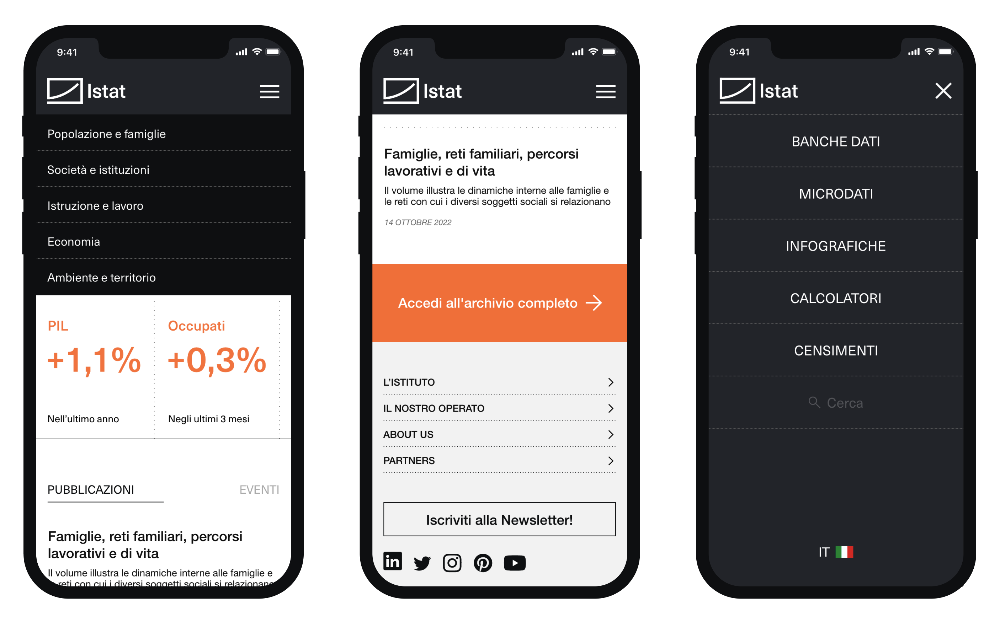
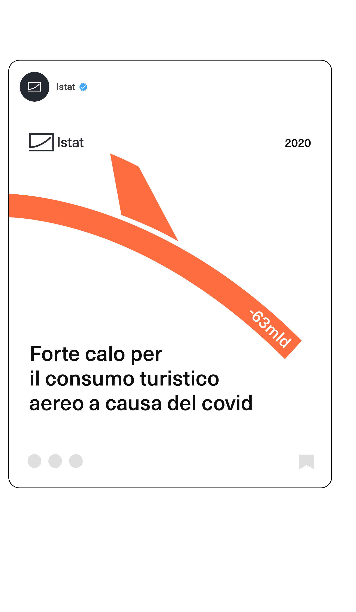
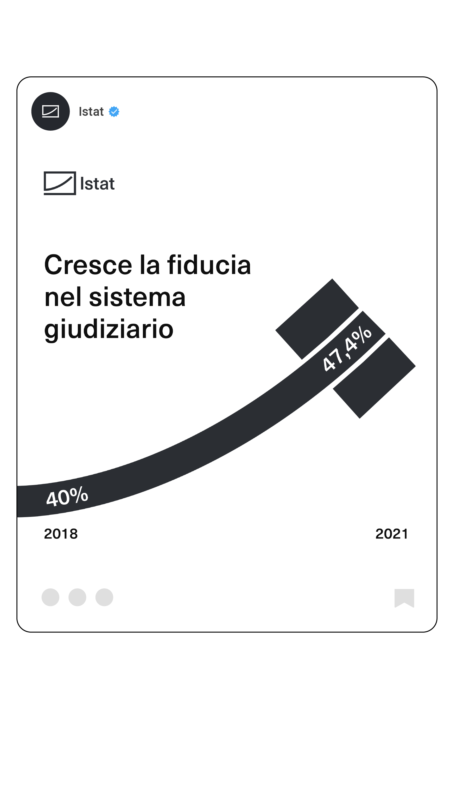

I have worked on a new visual identity with the aim of expressing the ideals of accuracy, reliability, and accessibility of information that the institution strives for in its statistical analysis work.
The project includes a new logo for the institution, declined in multiple configurations, a redesign of the website for both desktop and mobile devices, and a visual communication system for social channels.


The visual design seeks to cerate a communication system consistent with the ideals and constituent values of an institution dealing with statistics and at the same time capable of communicating complex information and analysis in a simple and immediate way even within social channels.

